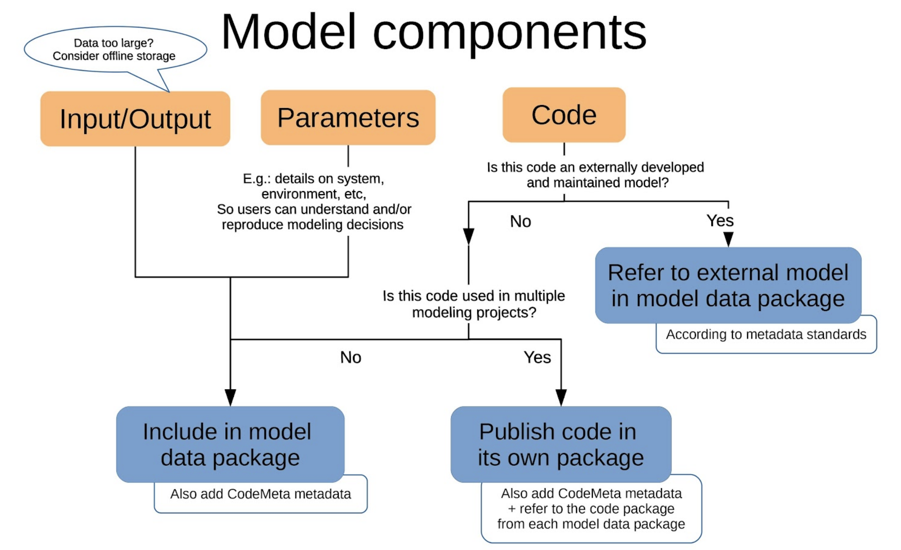

4 Model-Based Datasets
Contributors: An T. Nguyen, Tim Whiteaker, Corinna Gries
4.1 Introduction
This document includes recommendations for archiving data packages composed of model-based datasets. These datasets may include the model code itself, input data, model parameter settings, and output data.
The range of cases for model-based datasets includes small one-off model code specific to one research question, through various code packages which are maintained in community repositories as long as they meet requirements (e.g., CRAN for R packages), to large community models maintained by groups of programmers and users.
The intention of these recommendations is to make research based on modeling more transparent rather than achieve exact reproducibility, i.e., provide sufficient documentation so that a knowledgeable person can understand algorithms, programming decisions, and their ramifications for the results, rather than run the model and obtain the same results.
It is not always easy to determine who among project personnel (IMs, scientists, programmers) is responsible for the different components of a model-based dataset. This is best decided on a case-by-case basis. A common division is that the code authors annotate the code, and the IM handles the archiving and linkage to data product(s); partially except in cases of large community models.
4.2 Recommendations for data packages

4.2.1 Referencing models in EML
For data packages related to a model, whether the model is archived within the same data package or not, indicate linkage to the model in EML following the best practices for archiving code (see the section on linking code and data).
Example 1: EML snippet relating data to models via the method description:
<methodStep>
<description>
<para>This methodStep contains data provenance information as specified in the LTER EML Best Practices. Each dataSource element here lists entity-specific information and links to source data used in the creation of this derivative data package.</para>
</description>
<dataSource>
<title>Source dataset title</title>
<creator>
<individualName>
<givenName>first name</givenName>
<surName>last name</surName>
</individualName>
<organizationName>organization name</organizationName>
<electronicMailAddress>email@some.edu</electronicMailAddress>
</creator>
<distribution>
<online>
<onlineDescription>This is a link to an external online data resource (describe resource and repository location).</onlineDescription>
<url function="information">https://pasta.lternet.edu/package/metadata/eml/knb-lter-ntl/80/2</url>
</online>
</distribution>
<contact>
<positionName>Information Manager</positionName>
<organizationName>organization name</organizationName>
<electronicMailAddress>infomgr@some.edu</electronicMailAddress>
</contact>
</dataSource>
</methodStep>4.2.1.1 Model code
The model used to produce certain data needs to be well documented and linked from the resulting data product(s). However, it is not always easy to decide where and how to archive the code, and whether or not in conjunction with the data product(s). We outline in sections below three common code archiving options.
Note that these scenarios (model code archived with data, or standalone in EDI, or elsewhere) are not mutually exclusive. Any project that involves code might make use of both established and custom software hosted on many different platforms, and might use some or all archiving options.
To decide between archiving options, consider the questions listed in best practices for publishing code.
4.2.1.2 Model code and data in the same package
The goal of this practice is to ensure transparency of the data, and it applies to one-off models developed for the associated data, or occasionally to larger code bases for the reasons outlined in best practices for archiving code. Include the code as a dataset/otherEntity. Additionally, it is recommended to include a CodeMeta file, which can also be handled and documented in EML as dataset/otherEntity. CodeMeta is a metadata standard for software and code compatible with schema.org. Refer to best practices for archiving code for how to document the code and create CodeMeta.
4.2.1.3 Model code as standalone package
If the model has been used to generate several datasets, i.e., is more widely applicable, it can be archived as its own package in EDI and assigned a DOI. Include the code as a dataset/otherEntity. Additionally, it is recommended to include a CodeMeta JSON-LD file, which can also be handled and documented in EML as dataset/otherEntity. CodeMeta is a metadata standard for software and code compatible with schema.org. Refer to best practices for archiving code for how to document the code and create CodeMeta.
4.2.1.4 Model code archived/maintained elsewhere
This might include complex community models/software maintained by many people, published and actively maintained R/Python packages, etc., or simply code archived in another repository such as CoMSES Net. It may sometimes be advisable to archive a copy of the model code with the data, even if it appears to be maintained elsewhere. See recommendations above for referencing models in EML.
4.2.2 Model input and output data
These are considered data entities, which should be handled according to EML best practices for corresponding data types. However, if the resulting datasets are very large, one may consider if input/output from all individual model runs need to be archived. Are there specific model run results that are more useful for non-modelers? For example: results from model runs leading to a journal publication.
Very large model inputs/outputs may need to be archived offline. Refer to best practices for offline data.
If the model requires a specific folder structure, you can zip model input files within the package to preserve that folder structure. A disadvantage of this approach is that you cannot elegantly describe each file with EML.
The EarthCube Research Coordination Network, “What About Model Data?” group is working on a rubric to help you determine how much model output data to save, based on assorted criteria on reproducibility/value of the data. Learn more about that group and their rubric on their Model Data RCN website.
Researchers at the Department of Energy’s Environmental Systems Science are also working on assessing model archiving needs. In this preprint, Simmonds et al. 2020 discuss feedback from communications with modellers and propose preliminary solutions. With regards to input/output data, their feedback indicates two opposite opinions: some feel the whole gamut of raw to aggregated outputs needs to be archived, while others advocate for only high-level outputs corresponding to publication figures. They also found that spin-up simulations were not considered a high priority for archiving. See section 2.3 What is worth archiving and for how long does it remain useful?
4.2.3 Model parameters
Include model parameters whenever applicable. If code/input/output from multiple model runs are archived, make sure to archive all corresponding sets of parameters, and be explicit in linking the different components together.
Consider archiving model parameter files as their own data object(s) in both their native format and as a text (non-binary) version. If the ‘runfile’ will be archived, consider including the parameters within that file with appropriate annotations.
4.3 Example data packages in EDI
| Dataset Title | Description | EDI Package ID |
| North Temperate Lakes LTER General Lake Model Parameter Set for Lake Mendota, Summer 2016 Calibration | Parameters for specific GLM runs. GLM is a large community model, not managed and archived in EDI | knb-lter-ntl.348.2 |
| SBC LTER: Regional Oceanic Modeling System (ROMS) Setup Files, Code, and Lagrangian Model Setup Files | All the necessary code, grid, forcing, initial, and boundary condition files for running the UCLA version of the Regional Oceanic Modeling System (ROMS) for the Santa Barbara Channel | knb-lter-sbc.126.1 |
| Lake thermal structure drives inter-annual variability in summer anoxia dynamics in a eutrophic lake over 37 years | Dataset to run a 37-year simulation (1979-2015) of the Lake Mendota lake ecosystem using the vertical 1D GLM-AED2 model. | knb-lter-ntl.396.1 |
4.4 Resources
Janssen, Marco A., Lilian Na’ia Alessa, Michael Barton, Sean Bergin and Allen Lee (2008). ‘Towards a Community Framework for Agent-Based Modelling’. Journal of Artificial Societies and Social Simulation 11(2)6 http://jasss.soc.surrey.ac.uk/11/2/6.html.
Simmonds, Maegen, William J. Riley, Shreyas Cholia, and Charuleka Varadharajan (2020). ‘Addressing Model Data Archiving Needs for the Department of Energy’s Environmental Systems Science Community’. EarthArXiv (preprint). https://doi.org/10.31223/osf.io/acdk4.
See sections 2.3 What is worth archiving and for how long does it remain useful?, discussed above, plus 2.4 Model data archiving protocol, where the authors argue for better standardized reporting format for model data, e.g., top-level metadata and directory structure at a minimum. Section 4.1 Developing Model Data Archiving Guidelines proposes an organization scheme for model data.